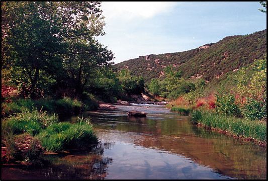
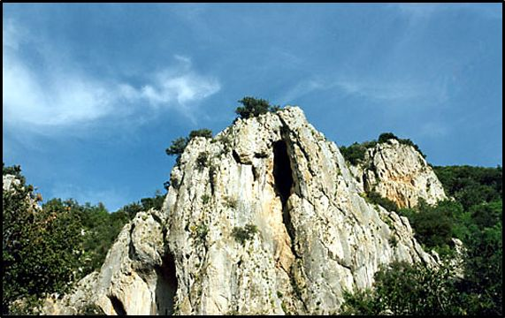
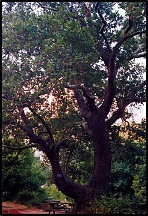
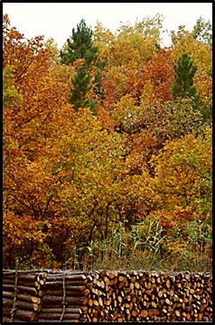

Η περιοχή Λουτρά - Άβαντας - Κίρκη - Συκοράχη - Λεπτοκαρυάς βρίσκεται στα νότια και κεντρικά του νομού Έβρου. Απλώνεται δίπλα στη στενή πεδινή ζώνη της Αλεξανδρούπολης, καταλαμβάνοντας τις νότιες και νοτιοδυτικές ορεινές περιοχές του νομού.
Χαρακτηρίζεται από έντονο ανάγλυφο με φαράγγια και δασωμένες κοιλάδες τις οποίες διατρέχουν τοπικά ρέματα. Η ποικιλία του τοπίου, η ύπαρξη μεγάλων βραχωδών ορθοπλαγιών, τα πυκνά δάση και η συχνή ύπαρξη υδάτινων περιοχών, η γειτνίαση με τους δύο Προστατευόμενους Βιότοπους (Δαδιά και Δέλτα Έβρου) δημιουργούν ένα μοναδικό σύνθετο οικοσύστημα, σπουδαίο τόσο για την οικολογική όσο και για την αισθητική αξία του.



